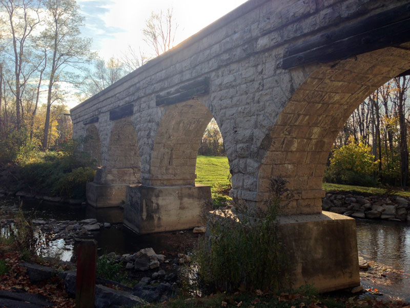

 
<p>The first image of the logo I optimized into a PNG file and brought it down to 8KB by using the minimum colors and setting the resolution to 800X600. For the second image, the photo of the bridge, I decided to use the JPG format, and had to keep around 200 colors because any less would severely degrade the quality of the image. It ended up being 124 KB.</p>